UI/UX CASE STUDY: RENTOLOGY
My final project for DES 112 was to design an app that would address a societal or environmental inequality. The topic I ended up choosing was "access to technology", which I felt was becoming increasingly relevant in the modern day.
For access to the full case study and more in-depth details, please click here. If you'd like to access the Figma and try the prototype, please click here.

Early Research & Concepts
For this project, my professor asked us all to think about the different types of inequalities and concerns that people face. We all pooled our ideas together and discussed the different categories of ideas people came up with, but the one that caught my eye was tech inequality. This refers to the different levels of access people across different ages and backgrounds have to technology.
To address this concern, I came up with the idea to do a simple technology rental app. My main goal was to create a cheap and accessible way for people to be able to rent technology for their needs. My inspiration for this came from already pre-existing programs in schools that allowed kids to borrow Chromebooks for the full school year to take home and bring back. Growing up, I never thought too much about these services. But looking back now, I'm infinitely grateful for programs like these that ensured every kid in school would be able to use a laptop to follow along with their classmates and friends.
This app would work in similar ways, where the user would be able to rent whatever device they needed for up to a month. Users would need to put down something to act as collateral to ensure the safety and longevity of our equipment, but they would get the collateral back after the device was returned.
To start, I researched statistics and data polls from across different ages and backgrounds regarding technology usage and technology access. Much of the research that I found correlated a lack of technology at home to lower income levels. Studies done during the 2020 pandemic have also shown that the lack of tech at home negatively impacted children's learning abilties, and that parents with with lower income levels were much more likely to report anticipating issues with their children when doing homework.
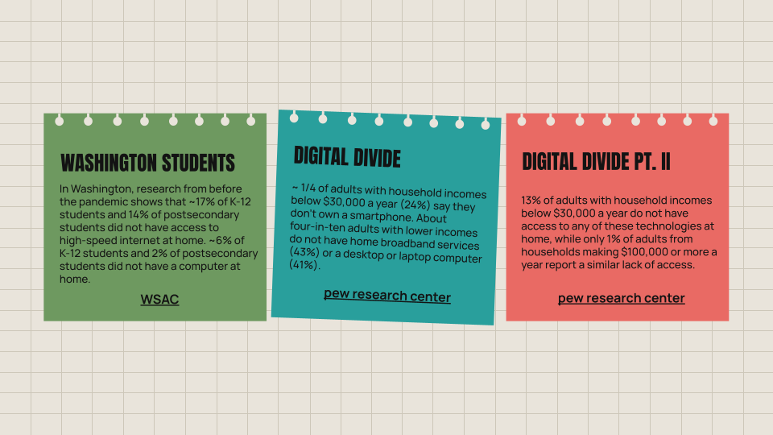
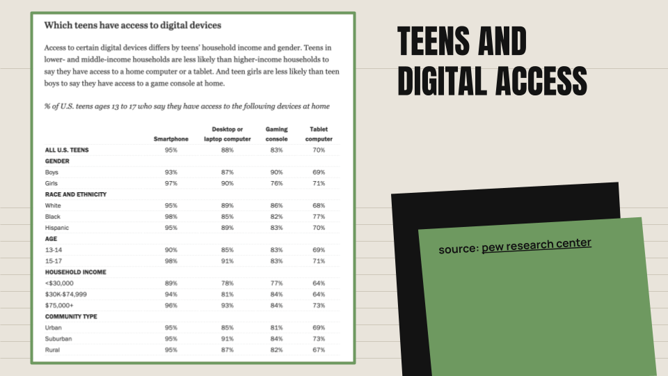
Target Audience
The target audience for this project was very broad, primarily being people who don't have consistent access to technology. This could range from students from low-income backgrounds to adults who need a helping hand to get back on their feet to even just tourists who want to use a laptop for a couple of hours. Because the user base was so broad, I had many things to think about in terms of ensuring equal amounts of access across different spectrums of demographics and backgrounds. The user personas I created were drawn from the data I researched and the target audience for this project.
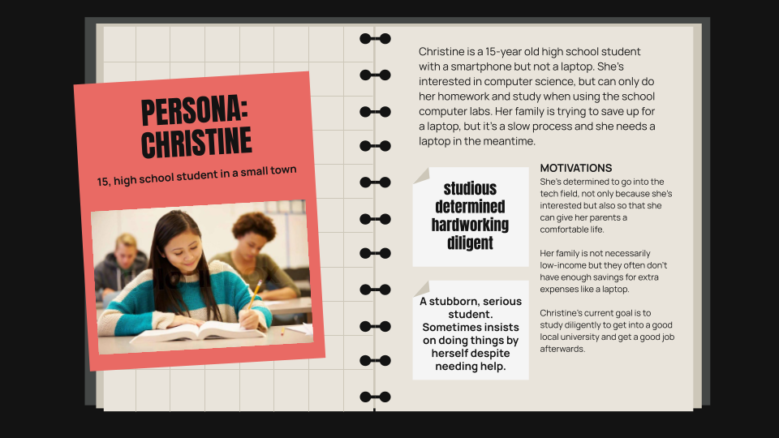
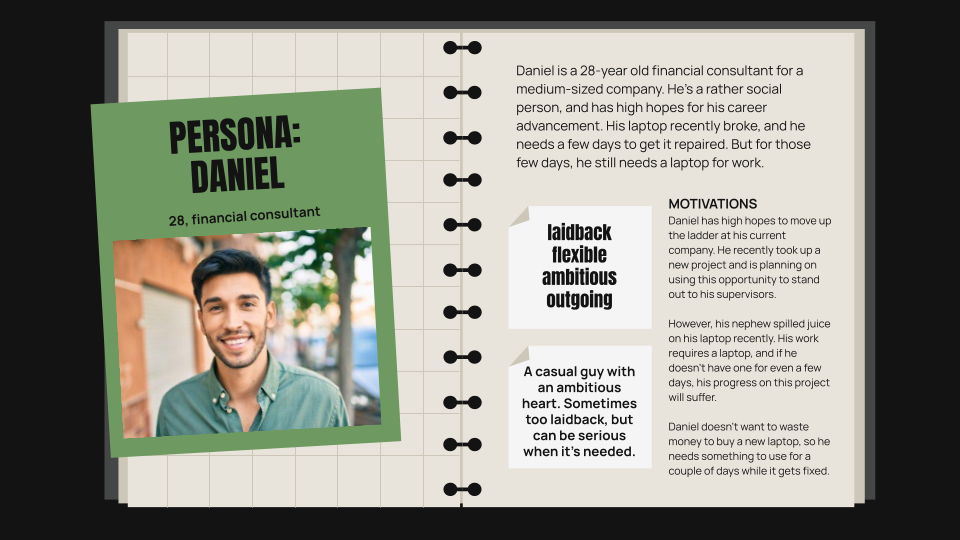
Goals & Challenges
One of concerns I had was regarding accessibility. Particularly, things like having proper identification to be able to rent things out was a barrier that I previously didn't think about. Many rental services require government-issued ID cards to prevent theft and secure liability. However, not everyone has access to an ID card and in many cases, even getting an ID on its own is a lengthy and expensive process.
After discussing this issue with my professor and thinking through several alternatives, we came to the conclusion that the best solution for now would be to provide multiple collateral methods and plans so that users wouldn't necessarily have to use a government-issued ID to rent technology. We would provide options for cash payment deposits to act as a liability collateral or alternative forms of identification such as using residential or school information.
Another challenge I faced was economic concerns. I also wanted to keep the rental price low to ensure that people of all economic backgrounds would be to access the app, but I also wanted to be realistic in my thought process. As much as I wanted to be able to have people rent items for free, this would not sustain the app in the long-run. Therefore, I researched nearby tech rental competitors to see how they were pricing their items to get a good idea for how I should price my own app.
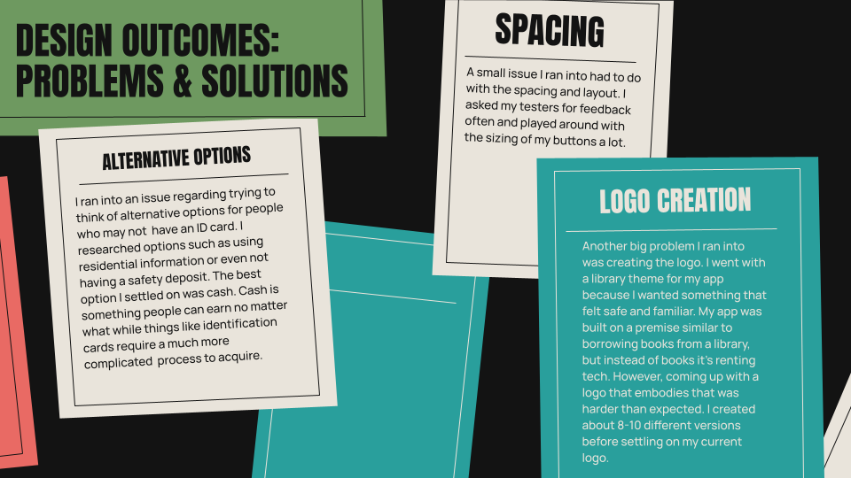
I had also through some other opportunities and concerns in my SWOT analysis, such as reusing or repurposing old tech in our services or collaborating with local schools or government programs to ensure further access to more people. However, my main concern was accessibiltiy for differnet demographics of people to gain access to technology.
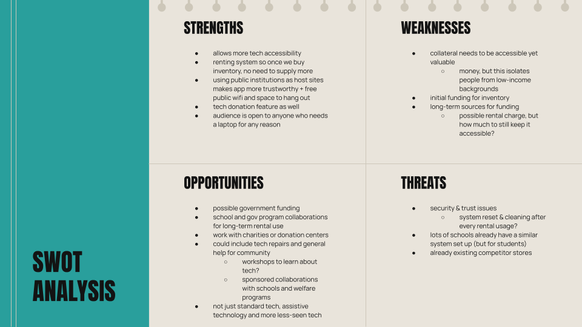
Imagery & Themes
I wanted to create an app that would appeal to and be easy to use for people of all ages. With that in mind, I chose to implement a library theme to reflect the sense that users could come and find whatever tech they needed and use it for however long they needed.
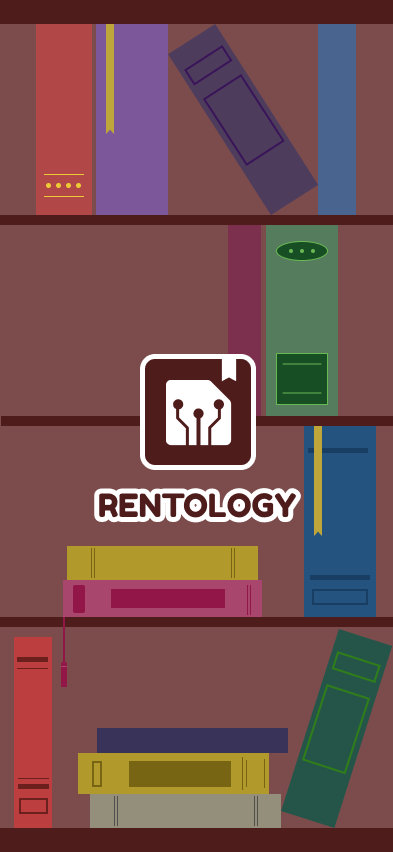
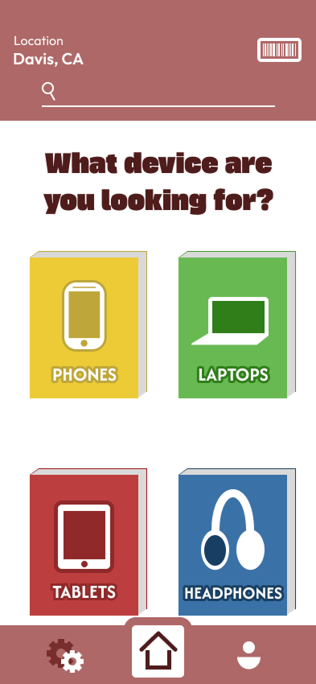
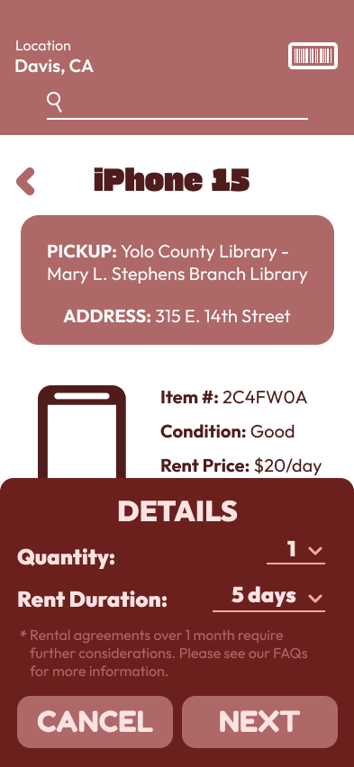
One of the more deliberate choices I made was to ensure the rent button was a vivid shade of green and easy to spot. Because most of the app is in shades of brown, pops of color help to draw the user's eye to the app functions. This was also why I made the categories in the home page such bright colors. It would make things easier to differentiate among the sea of brown and also draw people's attention to the most important items.
When it came time to make my logo, I was initially lost on what kind of logo would properly embody "Rentology". After going through mulitple iterations and asking my classmates for advice, I finally landed on Rentology's logo.
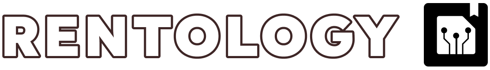
It was simple yet embodied both tech and the heavy library theme I had chosen. I chose to use sans serif typefaces throughout the entire app to give the a more modern and clean feeling to the users. I also felt that sans serif fonts were easier on people's eyes when viewed on a screen, which would help with accessibility. The computer chip visual with a bookmark in the upper right corner was distinct enough to differentiate Rentology apart from other tech rental apps, but also simple enough that I could use it anywhere as a logo without any problems.
User Testing & Final Notes
Lastly, I conducted usability testing with 10 different people to made sure the core functions of this app would run without problems. I created five tasks for my testers to click through, and immediately in the first round I found various issues and concerns brought up by my testers. The first major concern was regarding spacing for some of my buttons and text boxes. The other major concern was that I had forgotten to add a return button and only had the home button on my navigation bar, which meant that users would have to return to the home page and restart the entire process again if they wanted to return to a previous screen. After the first round of 5 users, I implemented their feedback and advice before testing my final version with 5 other users.
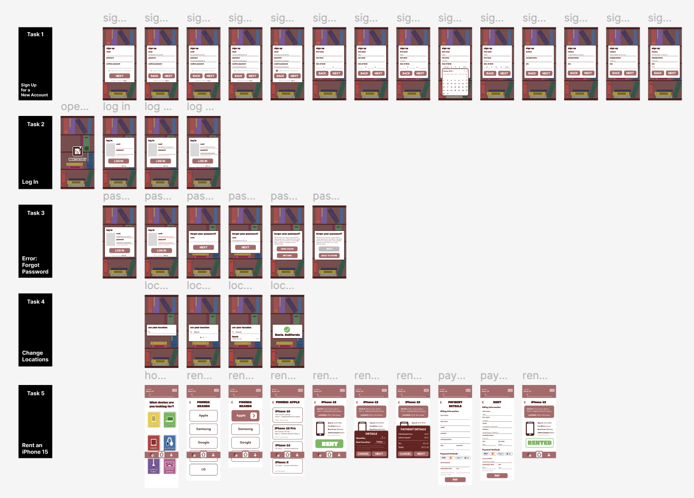
Lastly, I created a presentation slide to highlight the key features of Rentology and summarize my final project to my peers. I wanted to quickly and efficiently be able to pitch my app idea to others, so I emphasized four key points to know about my app as well and made sure to keep everything within the clean, brown theme I had chosen.
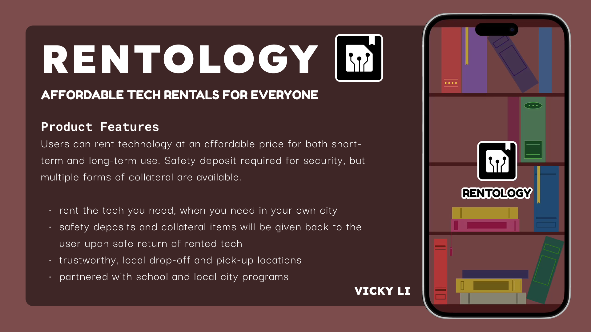